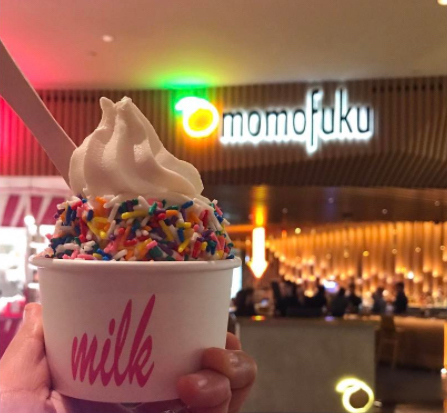

Chelsea Market

The Meatball Shop
This Lower East Side location has all the same bells and whistles as the other locations. Make sure everyone orders different types of meatballs so you can all try the beef, chicken, and even the vegetarian meatballs. You can also opt for your own. In that case we recommend the beef meatball smash with spicy meat sauce.Need to find a place to play?
Momofuku Nishi
This bustling Manhattan landmark is a prime destination for New Yorkers and out-of-towners alike. Within its walls are more than 30 unique shops and restaurants offering up true Big Apple flavor and feel. Some of our top picks include: Los Tacos No.1, Corkbuzz, Num Pan, Mokbar, Lobster Place, Giovanni Rana, The Tippler, and Doughnuttery.
David Chang's latest venture draws inspiration from Italian and Asian cuisine (among others) for an eclectic menu featuring the likes of black bass with tiger's milk and shio kombu (which is refreshingly light), and ceci e pepe -- a genius play on the traditional Italian cacio e pepe, which uses an incredibly flavorful fermented chickpea paste in lieu of cheese.